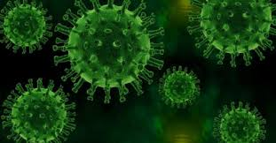

Como os vírus se multiplicam?

No capsídio e no envelope dos vírus envelopados, há proteínas ligantes, que se ligam aos receptores encontrados na membrana da célula que será infectada. Cada vírus é capaz de infectar um tipo de célula, sendo assim, dizemos que os vírus possuem especificidade.
Os vírus multiplicam-se no interior das células infectadas graças à inserção de seu material genético, que passa a comandar o metabolismo da célula hospedeira. Cada vírus possui um mecanismo diferente de multiplicação.
Após se multiplicarem, os vírus podem romper as células infectadas para a liberação de novas estruturas, constituindo, assim, um ciclo lítico. Outras vezes, o material genético viral pode manter-se ligado ao da célula hospedeira, e a transmissão desse material para novas células ocorre à medida que ela se divide, caracterizando um ciclo lisogênico.
Os vírus podem ser encontrados em praticamente todos os locais e infectar qualquer tipo de célula. As doenças causadas por eles são chamadas de viroses e são tratadas com poucas drogas, sendo recomendado normalmente repouso e boa alimentação. É importante frisar que antibióticos não são eficazes no tratamento de doenças virais.